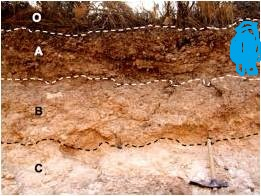
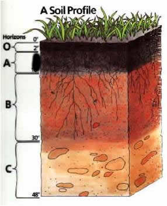
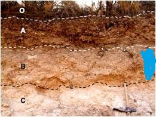
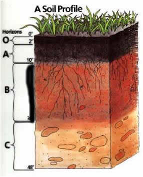
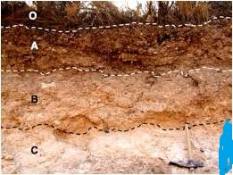
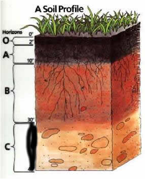
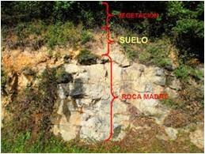

Horizontes del suelo
El suelo es un cuerpo heterogéneo y ello se visualiza cuando se estudia en el campo, ya que aparece conformado por varios horizontes o capas horizontales que se diferencian por su color y otras características. Dependiendo de su posición relativa en el perfil y de algunos atributos particulares se pueden discriminar los siguientes horizontes:
Horizonte O
Es una capa orgánica superficial, constituida por restos de plantas total o parcialmente descompuestas. Este horizonte se encuentra principalmente en ecosistemas en donde hay una gran producción de hojarasca que se acumula sobre el suelo.
Horizonte A
Es la capa mineral mas superficial con mayor acumulación de materia orgánica descompuesta y colores mas oscuros. Se encuentra debajo del horizonte O (cuando este está presente). Presenta también mayor lavado de arcillas y compuestos solubles. Se le conoce también como horizonte de Iluviación.
 Horizonte B
Es una capa mineral, debajo del horizonte A y de colores mas claros que este. Concentra las arcillas y compuestos solubles lavados del horizonte A horizonte A. Se le conoce también como horizonte de eluviación
 Horizonte C
Es una capa mineral debajo del horizonte B, y eventualmente debajo del horizonte A, si el horizonte B no se ha formado. Es un horizonte mineral de transición que tiene restos de material parental y material meteorizado
 El Material Parental
Es la roca o sedimentos de donde se origina el suelo. Se encuentra debajo del horizonte C, y en suelos con desarrollo muy incipiente, debajo del horizonte A. Usualmente se le denomina con la letra R o D
- «
- »